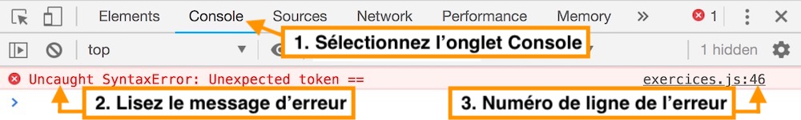
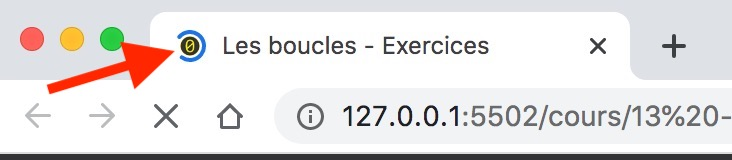

Pour répondre à ces exercices, tapez votre code dans le fichier exercices.js.
Pensez à bien lire l'intégralité de la documentation pour faire les exercices avant de commencer.
Dernier point, lorsque vous trouvez la solution d'un exercice par vous-même, allez tout de même voir la solution que je propose : vous apprendrez peut-être une autre façon de faire plus intéressante !
Il se peut que vous rencontriez certains problèmes techniques pour valider les exercices.
Lisez leur solution au moins une fois avant de commencer les exercices.
Si certains exercices précédemment validés en vert redeviennent gris et "En attente de code à tester" : c'est qu'il y a une erreur de syntaxe dans votre code. Solution : ouvrez la console développeur pour trouver l'erreur.
Sur Windows ou Linux : depuis Chrome, tapez Ctrl + Shift + J ou allez dans le
menu (les 3
petits points verticaux en haut à droite de la fenêtre de Chrome) puis allez dans Plus d'outils > Outils de
développement.
Sur MacOS : depuis Chrome, tapez ⌘ + ⌥ + J (Commande + Option + J) ou bien
allez dans le
menu Afficher > Options pour les développeurs > Console JavaScript.
Le message d'erreur apparaît en rouge et est en anglais, il faudra le traduire. L'erreur vient du fichier
noté sur la droite au numéro de ligne indiqué. Ouvrez ce fichier dans VSCode, rendez-vous à la ligne indiquée
et corrigez l'erreur.

Si la page web ne répond plus (les clics n'ont aucun effet) ou si l'icône dans l'onglet tourne indéfiniment : c'est qu'il y a une boucle infinie dans votre code. Solution : corrigez votre code puis actualisez le site web.
Si vous avez fait une boucle infinie, l'icône de votre onglet va tourner comme ça indéfiniment
:

Voici à quoi peut ressembler une boucle infinie dans du code :
let poidsClient = prochainClient.mesurerPoids();
while (poidsClient !== 0) {
console.log(poidsClient);
}
Le problème ici, c'est que la condition de répétition de la boucle poidsClient !== 0 est
toujours vraie ! En effet, on ne modifie pas la valeur de poidsClient à l'intérieur de la boucle,
par
conséquent celle-ci s'exécutera sans jamais s'arrêter : vous avez fait une boucle infinie !
Voici les étapes à respecter pour se sortir de ce problème :
Arrêter le processus en bas à droite.
Dans les paramètres, je vous conseille d'utiliser l'option onFocusChange pour la sauvegarde
automatique.
En effet, si vous avez l'option afterDelay de sélectionnée, ça veut dire que VSCode va
sauvegarder votre code toutes les X secondes. Le site web va se recharger automatiquement à ce moment là et si
votre code actuel génère une boucle infinie, Chrome va planter !
Pour éviter ce problème, utilisez l'option onFocusChange qui indique à VSCode de sauvegarder
votre fichier seulement si vous changez de fenêtre ou d'onglet. Vous pouvez aussi sauvegarder manuellemment
avec ⌘ + S sur MacOS ou Ctrl + S sur Windows ou Linux quand vous voulez vérifier que
votre code fonctionne.
Si vous souhaitez déboguer votre code, utilisez le débogueur de Chrome comme je l'explique dans cette vidéo.
Si vous êtes bloqué et qu'aucune solution mentionnée ne fonctionne, envoyez-moi un email sur jeremy@javascriptdezero.com en précisant le numéro de la leçon sur laquelle vous travaillez et le numéro de l'exercice qui pose problème.
Tous les exercices fonctionnent sur le même principe : vous devez rédiger une fonction récursive à partir de zéro et celle-ci devra renvoyer (avec le mot-clé return) la solution de l'énoncé.
Créez une fonction récursive sommeJusquaN(N) qui renvoie la somme des nombres de 1 à N inclus. La valeur de N sera toujours supérieure ou égale à 1.
Exemples :
sommeJusquaN(1) renverra 1.sommeJusquaN(3) renverra 6.sommeJusquaN(42) renverra 903.
Créez une fonction récursive puissance(nombre, p) qui renvoie le nombre porté à la puissance p. Autrement dit, la fonction doit calculer nombre ** p (qu'on écrit aussi nombre^p).
La valeur de nombre sera toujours un entier supérieur ou égal à 1. La valeur de p sera toujours un entier supérieur ou égal à 0.
Rappel : tout nombre porté à la puissance 0 vaut toujours 1. Autrement dit n ** 0 = 1.
Exemples :
puissance(5, 0) renverra 1.puissance(5, 1) renverra 5.puissance(5, 2) renverra 25.puissance(5, 4) renverra 625.puissance(42, 2) renverra 1764.Voici un grand classique de la littérature informatique pour expliquer la récursivité : la fonction factorielle.
La factorielle d'un nombre N se note N!. Celle-ci vaut N! = N * (N - 1) * (N - 2) * ... * 1.
Avec un exemple on comprend mieux, calculons la factorielle du nombre 5. On obtient : 5! = 5 * 4 * 3 * 2 * 1 ce qui fait au total 120.
Créez une fonction récursive factorielle(nombre) qui renvoie la factorielle de nombre. Notez que la factorielle de 1 vaut 1 : 1! = 1.
La valeur de nombre sera toujours un entier supérieur ou égal à 1.
Exemples :
factorielle(1) renverra 1.factorielle(5) renverra 120.factorielle(7) renverra 5040.La suite de Fibonacci est une suite de nombres entiers dont chaque nombre est la somme des 2 nombres qui le précèdent. Autrement dit, pour trouver le prochain nombre de cette suite, il suffit d'ajouter les 2 derniers nombres de celle-ci (on va voir des exemples ci-dessous).
Par définition, on fixe le 1er nombre de la suite de Fibonacci à 0 et le second nombre à 1. Par conséquent le 3ème nombre peut être calculé en faisant 0 + 1 = 1. Le 4ème nombre peut être calculé en faisant 1 + 1 = 2. Le 5ème nombre peut être calculé en faisant 1 + 2 = 3 etc.
Le début de la suite de Fibonacci est donc : 0, 1, 1, 2, 3, 5, 8, 13, 21, 34...
Créez une fonction récursive fibonacci(N) qui renvoie le Nième nombre de la suite de Fibonacci. La valeur de N sera toujours un entier supérieur ou égal à 0. Attention : le 1er nombre de la suite doit être retourné quand N vaut 0 (on compte à partir de 0 !).
Exemples :
fibonacci(0) renverra 0.fibonacci(1) renverra 1.fibonacci(2) renverra 1.fibonacci(3) renverra 2.fibonacci(4) renverra 3.fibonacci(5) renverra 5.fibonacci(6) renverra 8.
Créez une fonction récursive retourner(chaine) qui renvoie la chaine de caractères à l'envers.
Exemples :
retourner("JavaScript") renverra tpircSavaJ.retourner("Bonjour") renverra ruojnoB.
Créez une fonction récursive dichotomie(liste, nombreATrouver, posDebut, posFin) qui renvoie la position (l'index) du nombreATrouver dans la liste.
La liste est un tableau qui contient des entiers supérieurs ou égaux à 0. Point important : est elle triée par ordre croissant.
posDebut vaudra 0 lors de l'appel initial de la fonction dichotomie par mon code de test.posFin vaudra liste.length - 1 lors de l'appel initial de la fonction dichotomie par mon code de test.nombreATrouver se trouve toujours dans la listeExemples :
dichotomie([0,1,3,6,8,12,45,59,89,100], 12, 0, 9) renverra 5.dichotomie([0,12,45,59,89], 59, 0, 4) renverra 3.dichotomie([1,3,4,5,6,8,12,42], 3, 0, 7) renverra 1.